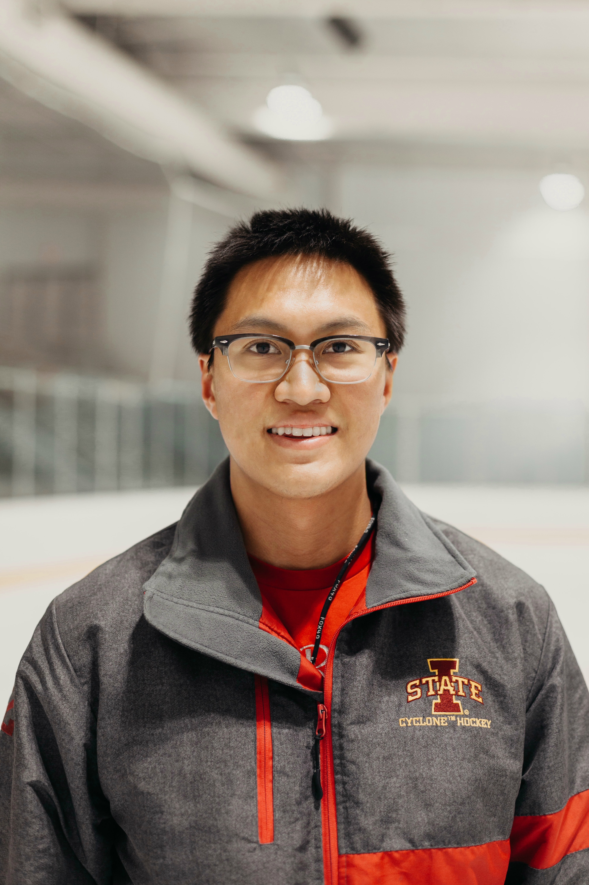

Name: Anthony Song

Major: Chemistry and Data Science
Research Experience:
Spectroscopic Research Iowa State University
- Mentors: Jacob W. Petrich (PhD), Mark A. Rasmussen (PhD), May 2017 - Current
- Implementing a translation stage control interface, using LabView, for an Optical Heterodyning Detection system.
- Utilizing fluorescence and UV-Vis spectroscopy to study the degradation of chlorophyll metabolites.
- Investigating the quenching of fluorophores and molecular interactions of magnetic ionic liquids in biological systems. • Training new undergraduate lab members in fluorescence and absorption instrumentation and analysis.
Radiation Oncology Research University of Minnesota Medical School
- Mentors: Chris Wilke (MD/PhD), Eric Ehler (PhD), Clark Chen (MD/PhD), June 2019 – Current
- Applying machine learning models to identify relationships in glioblastoma gene expression and clinical datasets.
- Extracting radiological imaging features for the detection of outliers in HDR Brachytherapy treatment plans using machine learning.
- Designing and 3D printing custom applicators to accurately and efficiently deliver radiotherapy dosages to mice.
- Gaining clinical experience in the radiation oncology unit by interacting with patients and shadowing physicians.
Department of Energy Undergraduate Research Fellow Ames Laboratory
- Mentor: Jacob W. Petrich (PhD), January 2020 – May 2020
- Programmed a virtual Spontaneous Parametric Down Conversion optical system model simulation to detect entangled photons using Python.
Publications:
1.) Santra, K., Song, A., Petrich, J. W., & Rasmussen, M. A. (2020). The Degradation of Chlorophyll Pigments in Dairy Silage: The Timeline of Anaerobic Fermentation. Journal of the Science of Food and Agriculture. https://doi.org/10.1002/jsfa.10917 (in press)
2.) Bower, A. N., Santra, K., Trujillo-Rodríguez, M. J., Song, A., Emaus, M. N., Petrich, J. W., & Anderson, J. L. (2020). Fluorescence quenching of the SYBR Green I-dsDNA complex by in situ generated magnetic ionic liquids. Analytical and Bioanalytical Chemistry, 412(12), 2743–2754. https://doi.org/10.1007/s00216-020-02538-3 (in press)
Leadership:
Iowa State Women’s Division 2 Hockey Coach Iowa State University
- Head Coach, August 2018 – Current
- Formulating and implementing on and off-ice systems to optimize performance and opportunities to win competitions.
- Developing the team mentally and physically to become successful as individuals and players.
- Leading by example to gain trust and respect from the players and staff.
Undergraduate Research Ambassador and Academic Success Center Tutor Iowa State University
- Speaker and Tutor, March 2018 – Current
- Serving as a liaison for students interested in getting engaged in research.
- Planning, leading, and organizing tutoring sessions in Organic Chemistry, Physics and Computer Science.
- Speaking at campus organizations, classes, and major university events about undergraduate research initiatives.
Adaptive Sports Iowa Paralympic Sled Hockey Coach Ames, Iowa
- Volunteer Head Coach and Coordinator, November 2018 - Current
- Coaching and leading ice sessions as well as connecting with individuals with disabilities.
- Working with members of Adaptive Sports Iowa to promote and improve Special Olympic sports exposure.
Research Interests: I am interested in integrating spectroscopic methods and machine learning models to study the detection and classification of cancer biomarkers.